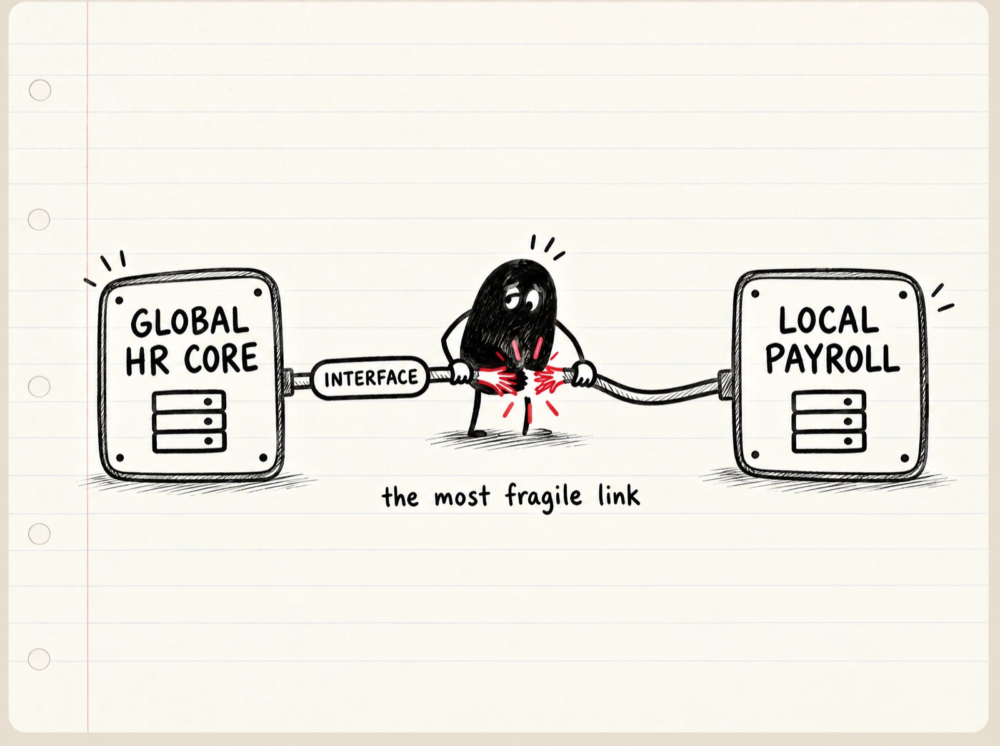
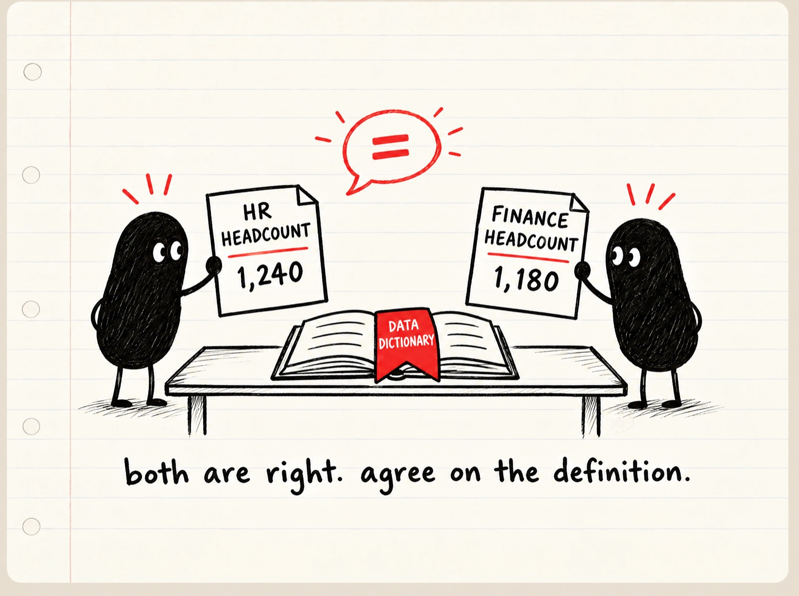
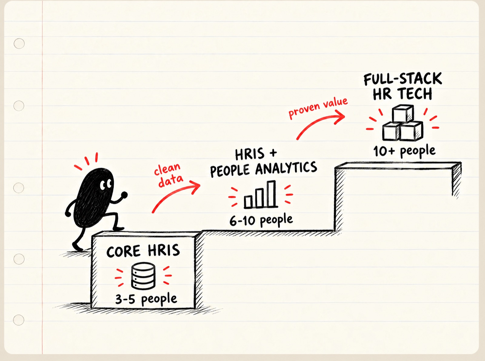
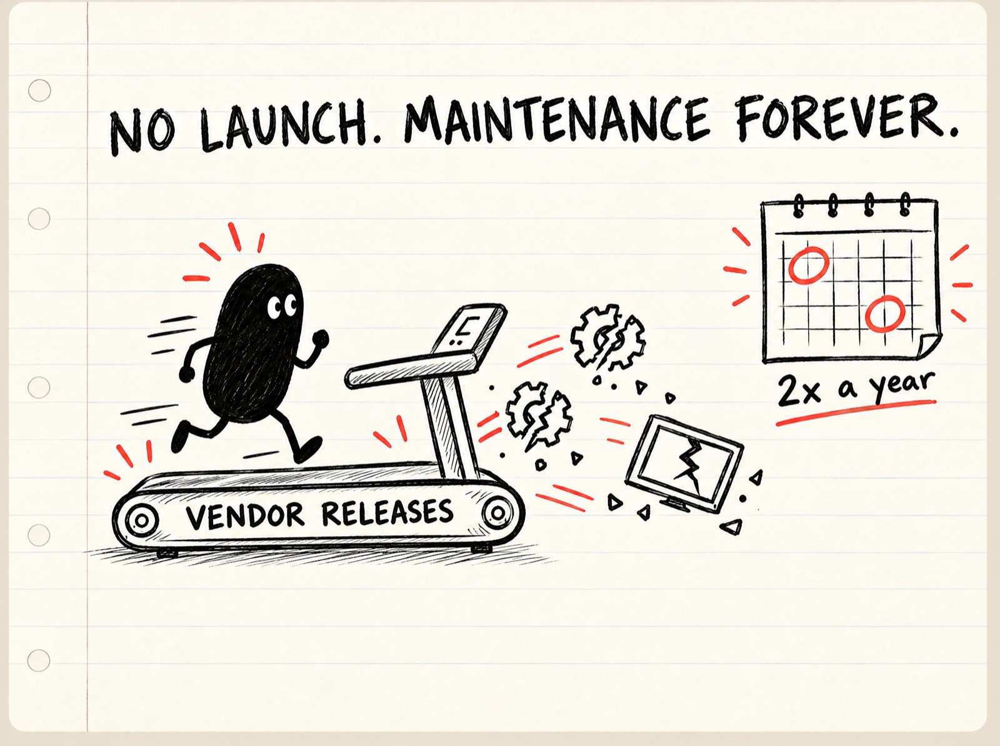
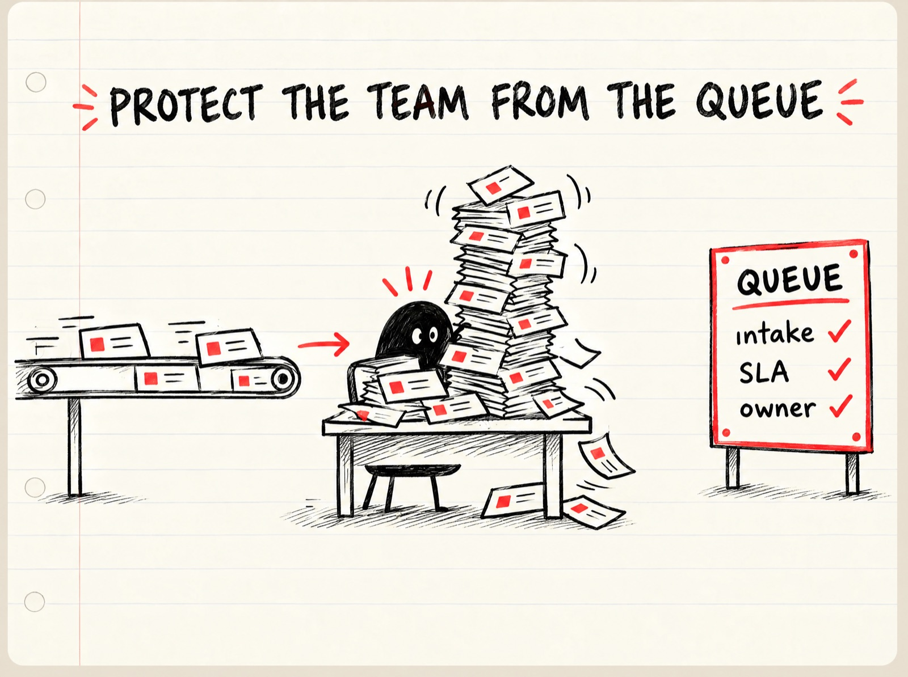

מילון קצר. HRIS היא מערכת הליבה של משאבי אנוש, המקום שבו רשומת העובד "האמיתית" חיה. HCM היא הסוויטה הרחבה שמעל, עם גיוס, ביצועים, למידה ותגמול. People Analytics הוא השימוש בדאטה של העובדים כדי לקבל החלטות, לא רק כדי להפיק דוחות. מערכת רשומה (System of Record) היא המערכת שכולם מסכימים שהיא הגרסה הנכונה של האמת. ממשל נתונים (Data Governance) הוא ההסכמה מי אחראי על כל שדה, מה ההגדרה שלו ומי רשאי לשנות אותו.
ההקשר של המסמך. נכתב כהכנה לאפשרות שתתקבל האחריות על הקמת יחידת HRIS ודאטה חדשה בארגון, שהמנדט שלה הוא להעלות את הערך של משאבי אנוש לעסק.
גרסה לשיתוף. הדוח הזה קיים גם כעמוד HTML עם תפריט צף, מחשבון גודל צוות, כרטיסיות לשלוש האופציות ומסגרת ה-KPI. https://booya1986.github.io/HRIS/
אמל״ק
יחידת HRIS היא לא "צוות שמתחזק מערכת". היא הבעלים של רשומת העובד, של הממשקים בין HR לשכר, לכספים ול-IT, ושל האמינות של כל מספר שמשאבי אנוש מציגים להנהלה. בעולם, הכיוון הברור הוא לאחד את הטכנולוגיה של HR ואת הדאטה של HR ליחידה אחת, ולנהל אותה כמו מוצר ולא כמו מוקד תקלות. בישראל, השכר המקומי הוא העוגן שסביבו הכל מתארגן, ורגולציה חדשה (תיקון 13 לחוק הגנת הפרטיות, הוראה 364 של הפיקוח על הבנקים) הופכת את ממשל הנתונים מ"נחמד שיש" לחובה. פונקציית הדאטה מגיעה למשקל של יותר מחצי מהערך של היחידה, אבל רק אם היא בנויה על נתונים נקיים, ולכן שלב 1 (Core HRIS, מערכת רשומה אמינה) הוא תנאי לשלב 2 (HRIS + People Analytics) ולשלב 3 (Full-stack HR Tech, כל המחסנית כמוצר). ומה שה-CHRO כנראה מתכוון אליו כשהוא אומר "ערך" הוא HR שמוביל ב-AI, כך שאת שלב 1 צריך למכור כתשתית ה-AI ולא כהיגיינה. הסכנה הגדולה למי שמגיע מעולם הלמידה היא לחשוב שיש "השקה". אין. יש תחזוקה קבועה של מערכת שהספק שובר לך פעמיים בשנה לפי לוח זמנים שלו.
תובנות מפתח, הלא צפויות קודם
- רק 13% מהטמעות טכנולוגיית HR עולות על הציפיות בכל היבט שהוא, ורבע מהן מפספסות את לוח הזמנים (Sapient Insights דרך SHRM, סקר 2023–2024). ה"עלייה לאוויר" והמערכת שבאמת עובדת הן שתי אבני דרך שונות, ולפעמים מפרידות ביניהן שנים.
- כישלון בהגירת נתונים הוא כמעט תמיד כישלון ממשל ולא כישלון טכני. חמישה ספקים וקבלני יישום שונים, בלי אינטרס להסכים זה עם זה, מצביעים על אותה סיבה. אין בעלים עסקי לכל תחום נתונים, אין מפת שדות, אין תוכנית ביקורת לפני שזה משנה. הבדיקות עוברות והנתונים עדיין שגויים.
- מדרון השחרורים של SaaS הוא מס קבוע, לא סיכון חד פעמי. Workday ו-SuccessFactors משחררים גרסאות חובה פעמיים בשנה, וכל שחרור מזיז מסכים, משנה מזהי שדות ושובר אוטומציות. ארגון אחד תיאר שני מחזורי רגרסיה מלאים בכל רבעון כי לוחות השחרור של SuccessFactors ושל S/4HANA לא מסונכרנים.
- גרטנר צופה שעד 2029, 30% מהארגונים יקימו צוותים משולבים של HR ו-IT, ומדווחת ש-85% ממנהלי HR כיום מעבירים לאחרים את ההחלטות על טכנולוגיית כוח אדם מבוססת AI. השאלה "האם היחידה שייכת ל-HR או ל-IT" מתחלפת בשאלה "מה ההסכמות בין השניים".
- צוותי People Analytics התייצבו על יחס של איש צוות אחד לכל 2,500 עובדים (Insight222, 2025/26, יותר מ-370 ארגונים). צוותים בשנתם הראשונה מתוקצבים כמעט חצי מזה, ומכפילים את עצמם אחרי שהם מוכיחים ערך.
- 52% מהארגונים מדווחים על שיפור עסקי מדיד מ-People Analytics (Insight222 2025/26), ובמקביל רק כחמישית מדווחים שהם "יעילים מאוד" בשימוש בזה (HR.com, ממקור משני). כלומר הפונקציה שווה הרבה, ורוב הצוותים לא מממשים את זה.
- מי שמאמץ AI "טכנולוגיה קודם" צפוי פי 1.6 לא להגיע לתשואה שמעל הציפיות לעומת גישה שממוקדת באנשים (Deloitte Human Capital Trends 2026, כ-9,000 מנהלים ב-89 מדינות). זה נתון כללי על AI ולא על HRIS, אבל הוא הטיעון החזק ביותר לסדר הפעולות "דאטה נקי לפני אג'נטים".
- בישראל אין שיח קהילתי פתוח על HRIS. אפס תוצאות רלוונטיות ב-Reddit, Hacker News ו-X בעברית ובאנגלית. השיח קיים, אבל בקבוצות לינקדאין סגורות, בוואטסאפ מקצועי ובכנסים. זו לא תקלת חיפוש, זה ממצא. הידע המקומי יושב אצל אנשים, לא במסמכים.
- הספקים עצמם מודים שממשל אג'נטים הוא בעיה לא פתורה. SAP פתחה "AI Agent Hub" ו-Workday השיקה "Agent Passport" לבדיקה ובקרה של אג'נטים. אם הספק בונה כלי ממשל, מישהו בארגון צריך להפעיל אותו. זו אחריות חדשה של היחידה.
1. מה זה HRIS ומה היחידה עושה
סולם ההיקף
| שכבה | מה כלול | מה זה בפועל |
|---|---|---|
| HRIS | רשומת עובד, מבנה ארגוני, נוכחות, ממשק שכר, הטבות, שירות עצמי, דוחות בסיסיים | מערכת הרשומה. מקור האמת |
| HRMS | HRIS ועוד גיוס, קליטה, ניהול ביצועים, מעורבות | תהליכי מחזור חיי העובד |
| HCM | HRMS ועוד למידה, תגמול, תכנון ירושה, אנליטיקה מתקדמת | הסוויטה המלאה של הספקים הגדולים |
הגבול המעשי של HRIS מסתיים במקום שבו היא הופכת למקור האמת של מערכות אחרות. מהנדס זהויות תיאר את זה בצורה הכי חדה שמצאתי. Workday היא "מערכת הרשומה של HR, מקור האמת לאילו חשבונות לפתוח ולסגור ב-Active Directory". פתיחת החשבונות עצמה היא של IT. הנתון שמפעיל אותה הוא של HRIS.
נתון רקע שמסביר למה זה מסובך. 30% מהחברות מריצות במקביל עשר מערכות HR או יותר (AIHR, 2026, מקור יחיד ברמת מגזין מקצועי). "מערכת רשומה" היא לרוב הצהרת כוונות, לא מציאות.
מטרות שארגונים כותבים לפונקציה
השפה חוזרת על עצמה בכל המקורות. מקור אמת אחד לנתוני העובדים. שלמות נתונים. אוטומציה של תהליכים. עמידה ברגולציה. יכולת לקבל החלטות בזמן אמת. ג'וש ברסין הוסיף ב-2026 מטרה חדשה שמעל כולן. "אנשי HR חייבים לוודא שהאג'נטים שהם מפעילים ניזונים מנתונים מדויקים, עדכניים ומלאים". כלומר שלמות הנתונים היא כבר לא היגיינה תפעולית, היא תנאי הכניסה לכל יוזמת AI.
תחומי אחריות, בפירוט
| תחום | מה זה כולל | מי מחזיק את זה בדרך כלל |
|---|---|---|
| שלמות נתונים וממשל | דיוק, שלמות ועדכניות של רשומת העובד, מילון הגדרות, בעלות על שדות, התאמת מצבת עם כספים | HRIS אחראית, כספים ושכר מתייעצים |
| קונפיגורציה ותחזוקה | הגדרת תהליכים עסקיים, זרימות אישור, עדכוני גרסה, בדיקות רגרסיה | HRIS |
| אבטחה והרשאות | תכנון תפקידים, מי רואה מה, ביקורות גישה | HRIS מתכננת, אבטחת מידע מאשרת |
| ממשקים ואינטגרציה | שכר, כספים, ניהול זהויות, למידה, גיוס | HRIS ו-IT יחד |
| דוחות ואנליטיקה | דוחות שגרה, דשבורדים, ניתוחים | HRIS בשלב 1, צוות אנליטיקה בשלב 2 |
| דרישות ויישום | תרגום צרכי HR לדרישות טכניות, ניהול פרויקטים, UAT | HRIS |
| ניהול ספקים ומפת דרכים | חוזים, שחרורים, תעדוף פיצ'רים, תקציב | מנהל היחידה |
| אימוץ והדרכה | הכשרת משתמשים, תמיכה, ניהול שינוי | HRIS, לרוב לא מתוקצב מספיק |
| מקרי קצה של דיני עבודה | קידוד הסכמים קיבוציים, ותק, סוגי היעדרות | HRIS עם שכר ויחסי עבודה |
הערה על אבטחת מידע. אף מקור לא הציג מטריצת RACI שבה אבטחת מידע היא עמודה נפרדת. היא תמיד "מובלעת" בתוך IT. בארגון מפוקח זה לא מספיק, ואת העמודה הזאת צריך לכתוב בעצמנו.
2. איך זה מיושם בעולם
איפה היחידה יושבת
במודל אולריך, HRIS משרתת בעיקר את שכבת ה-Shared Services (שירות עצמי, מוקד פניות, שינויי נתונים), ומרכזי המומחיות (Centers of Excellence) צורכים את הנתונים שלה אבל לא בעלים של המערכת. ההמלצה המעשית שחוזרת היא לייצב את השירותים המשותפים ואת מערכת הרשומה לפני שמעבירים כוח אדם למרכזי מומחיות. זה בדיוק הטיעון לשלב 1 לפני שלב 2.
מודל התפעול העתידי של גרטנר כבר מאחד את "טכנולוגיית HR" ואת "צוות נתוני הטאלנט" ליחידת תפעול ושירות אחת, ומפתח את People Analytics ל"מודיעין הון אנושי". כלומר מה שאני מציע כשלב 2 הוא לפי גרטנר המקום שאליו ארגונים בוגרים הולכים.
על קו הדיווח. הנתון היחיד שמצאתי הוא על HR בכלל, לא על HRIS. 61% מהארגונים מדווחים למנכ"ל, 13% לסמנכ"ל כספים, 10% ל-COO (AIHR, מקור יחיד). מה שכן ספציפי ל-HRIS הוא ההמלצה של גרטנר. לא לבחור בין HR ל-IT אלא לסכם מראש אזורי אחריות משותפים ועקרונות להכרעה כשהעדיפויות מתנגשות.
כמה אנשים
הנתון המרכזי הוא יחס. "1 ל-2,500" פירושו איש צוות אנליטיקה אחד על כל 2,500 עובדים בארגון. זה היחס שאליו התייצבו צוותי People Analytics ב-2025 לפי Insight222 (יותר מ-370 ארגונים). היחס נמדד מול כלל העובדים בארגון ולא מול אנשי HR, כי הצוותים המצליחים משרתים את העסק כולו.
מה שמעניין הוא איך היחס משתנה עם הגיל של הצוות. צוותים בשנה הראשונה שלהם מקבלים בערך חצי מהמשאבים, ואחרי שהם מוכיחים ערך הארגון מכפיל אותם.
זה צד האנליטיקה בלבד. את צד המערכות (קונפיגורציה, הרשאות, ממשקים) מוסיפים מעל.
| מצב הצוות | היחס | מה זה אומר בארגון של 10,000 עובדים | מקור |
|---|---|---|---|
| צוות אנליטיקה בשנה הראשונה | 1 ל-4,800 | בערך 2 אנשים | Insight222 2022 |
| צוות ותיק, משנתיים ומעלה | 1 ל-2,700 | בערך 4 אנשים | Insight222 2022 |
| ממוצע כלל הארגונים ב-2025 | 1 ל-2,500 | 4 אנשים | Insight222 2025/26 |
| דוגמה מהמחקר, ארגון של 100 אלף עובדים | 34 אנשים בממוצע | Insight222 2022 |
וזה רק צד האנליטיקה. את צד המערכות (קונפיגורציה, הרשאות, ממשקים) מוסיפים מעל זה, ולכן הטווחים בסעיף 5 הם 3 עד 5 אנשים בשלב 1 ו-6 עד 10 בשלב 2.
עוד שלושה נתוני רקע.
| מדד | ערך | מקור |
|---|---|---|
| יחס אנשי HR לעובדים בחברות גדולות | איש HR אחד לכל 32 עובדים (חציון) | Pave |
| הוצאת HR מתוך הכנסות הארגון | 0.74% | Gartner 2025 |
| תחום ההוצאה ב-HR שצומח הכי מהר | טכנולוגיית HR | Gartner 2025 |
מודל תפעול של מוצר
ההצעה הכי מעשית שמצאתי לשלב 3 היא הגדרת תפקיד "Product Owner של HR". בעלות מתמשכת על הערך של המוצר, צוות רב תחומי, ניהול backlog, קבלת החלטות על סמך ראיות, שחרור בהדרגות, ובסוף גם החלטה מתי לסגור מוצר. שלוש קדנציות ניהול. אסטרטגית (חצי שנתית, חזון וגבולות), טקטית (רבעונית, OKR והימורים), תפעולית (שבועית, תעדוף ה-backlog). גרטנר מאשרת מכיוון אחר. המעבר מתמיכה מבוססת כרטיסים לשירות עצמי חכם דרך "צוותי delivery זריזים".
מודלי בשלות, עם הסתייגות
מודל הבשלות של Deloitte לאנליטיקת HR מתחיל ב"דיווח תפעולי" (מה קרה), עובר ל"דיווח מתקדם" (ריבוי זוויות שמשפיע על החלטות), ומגיע לשלבים אסטרטגיים וחזויים. 60% מפונקציות HR תקועות בשלב 2 (Deloitte, נתון מ-2024 דרך סיכום משני). ג'וש ברסין מדבר על ארבע רמות של "Systemic HR", כשרמה 1 היא "ציות טרנזקציוני".
ההסתייגות החשובה. Insight222, גוף המחקר המוביל בתחום, כתב בדוח 2025/26 שהעדשה של "מודל בשלות" כבר לא מספיק מהירה, והציע במקומה חמש יכולות. ייעוץ, מדעי הנתונים, הקשבה לעובדים, אנליטיקה בקנה מידה, ו-delivery. שלוש האופציות שלמטה הן עדיין מודל שלבי, כי ככה בונים יחידה בפועל, אבל את חמש היכולות שווה להחזיק כרשימת בדיקה בכל שלב.
3. איך זה נראה בישראל
השכר הוא העוגן

חישוב שכר ישראלי (מס, ביטוח לאומי, פנסיה, קרן השתלמות, פיצויים, הסכמים קיבוציים ענפיים) הוא משהו שסוויטות HCM גלובליות לא מחשבות נכון מהקופסה. לכן הארכיטקטורה הרווחת בארגונים גדולים היא ליבת HR גלובלית או מודרנית (Workday, SuccessFactors, HiBob) ועוד ממשק ועוד מנוע שכר מקומי (חילן, מלם, מיכפל). חילן עצמה משווקת את זה כבעיה. "הצורך ביצירת ממשק בין מערכת ה-HR הארגונית לבין מערכת השכר" עם הכפלת הזנות, עומס תחזוקת ממשקים ואובדן מקור אמת אחד, ומציעה כאלטרנטיבה HR ושכר על בסיס נתונים אחד. זה תיאור אינטרסנטי של ספק, אבל הוא תואם את המציאות המוכרת של השוק. הלקח ליחידה חדשה. הממשק בין HR לשכר הוא הנכס הכי שביר בארגון ישראלי, ומישהו צריך להיות הבעלים שלו במפורש.
נוף הספקים
| שכבה | שחקנים | הערה |
|---|---|---|
| שכר ונוכחות מקומיים | חילן, מלם תים, מיכפל, סינריון, פריוריטי | שולטים בכל מקום שבו השכר הישראלי הוא הצורך המרכזי |
| סוויטות HCM גלובליות | Workday, SAP SuccessFactors, Oracle HCM, Dayforce | ארגונים גדולים, לרוב עם זיקה בינלאומית |
| חריג מעניין | HiBob | נוסדה בתל אביב ב-2015, היום ספקית HCM גלובלית, שווי 3.2 מיליארד דולר (ספטמבר 2026), רכשה את Pento ב-40 מיליון דולר כדי להוסיף שכר. גם ספק ישראלי לא בנה שכר בעצמו |
אין נתון עדכני על גודל שוק ה-HR Tech הישראלי. המפה היחידה שמצאתי היא מ-2018 (כ-70 חברות, ממוצע 7 כלי HR בחברה גדולה). זו טקסטורה, לא מספר לציטוט.
רגולציה שמשנה את המשחק
תיקון 13 לחוק הגנת הפרטיות, בתוקף מ-14 באוגוסט 2025. אומת מול שלושה משרדי עורכי דין. מה זה אומר ליחידת HRIS.
- חובת מינוי ממונה הגנת פרטיות (DPO) לגופים ציבוריים, סוחרי מידע עם יותר מ-10,000 רשומות, מפעילי ניטור שיטתי, ולבנקים וחברות ביטוח כמעבדי מידע רגיש בהיקף נרחב.
- עמדת הרשות להגנת הפרטיות היא שטיפול שגרתי בנתוני עובדים לבדו לא מחייב DPO. החובה נובעת מהארגון כמכלול, לא מ-HR. אבל בארגון פיננסי ה-DPO קיים ממילא, ויחידת HRIS תעבוד תחתיו.
- הדירקטוריון חייב לאשר מדיניות, להגדיר אחראים ולקבל עדכונים. מינוי DPO לא פוטר אותו.
- הרשות קיבלה סמכויות אכיפה וקנסות בסגנון GDPR, ביקורות יזומות ודרישת מסמכים. מינוי DPO מזכה בהפחתה של 10% מהקנס (מקור יחיד, לאמת מול הרשות). לא נמצא נתון על תקרת הקנס בשקלים.
- הרשות ציינה שאיחוד תפקידי CISO ו-DPO באדם אחד "אינו ראוי".
הוראת ניהול בנקאי תקין 364 (דצמבר 2024). מאחדת את הוראות 357, 361 ו-363 למסגרת אחת לניהול סיכוני סייבר והגנת מידע. מחשוב ענן נחשב מיקור חוץ (הוראה 359א). המשמעות ליחידה. כל מערכת HR בענן, מקומית או גלובלית, מחייבת הערכת סיכונים לפני ההתקשרות והערכה מחזורית אחריה. לא אישור רכש חד פעמי.
מילואים כדוגמה לסוג היעדרות שתבנית גלובלית לא מכירה. מ-2026 הזכויות הופכות קבועות. הגנה מפני פיטורים, שעת היעדרות יומית לבן או בת זוג של משרת מילואים מהיום הראשון, שיפוי מעסיקים קבוע ומענקים חד פעמיים ל-2025 ו-2026, וצו הרחבה צפוי. כל זה חייב להיות מקודד במערכת, לרוב בצד מנוע השכר המקומי.
הממצא על השיח
ניסיתי Hacker News, Reddit ו-X בעברית ובאנגלית. אפס. השיח המקצועי הישראלי על HRIS חי בקבוצות סגורות ובכנסים (ועידת ישראל למשאבי אנוש, HR Portal). המשמעות המעשית לי. כדי להבין את השוק המקומי צריך לדבר עם אנשים, לא לקרוא. שיחות עם שלושה או ארבעה מנהלי HRIS בבנקים וחברות ביטוח שוות יותר מכל מה שיש כאן על ישראל.
4. משקל פונקציית הדאטה ביחידה
הראיות בעד
| ממצא | מספר | מקור וביטחון |
|---|---|---|
| ארגונים שמדווחים על שיפור עסקי מדיד מ-People Analytics | 52% | Insight222 2025/26, גבוה |
| צמיחת צוותי People Analytics למרות הזעזועים | 60% | Insight222 2025/26, גבוה |
| מאפיין הכי מבדיל של צוותי אנליטיקה עם השפעה | הנדסת נתונים ייעודית | McKinsey, ממצא איכותי, בינוני |
| אנליסטים שמדווחים שאיכות נתונים גרועה היא הבעיה הכי נפוצה | 57% (2024), 56% (2025) | dbt Labs, כללי ולא HR, בינוני |
| עלות שנתית ממוצעת של איכות נתונים גרועה | 12.9 מיליון דולר | Gartner 2020, מדגם של 154 רוכשי כלי איכות נתונים, ישן ומוטה |
| ארגונים שמאמצים AI "טכנולוגיה קודם" ולא מגיעים לתשואה מעל הציפיות | פי 1.6 | Deloitte 2026, כ-9,000 מנהלים, גבוה |
הראיות נגד, וזה חשוב לא פחות
לא מצאתי מקרה מתועד של צוות People Analytics שפורק. מה שכן מצאתי הוא פער אפקטיביות. רק 22% מהארגונים מדווחים שהם "יעילים מאוד" בשימוש ב-People Analytics, ורוב הצוותים "מדווחים על פעילות ולא על השפעה" (HR.com 2024–25, דרך סיכום משני, לאמת). מהצד של הלקוח הפנימי, פוסט ב-r/humanresources תיאר בקשת נתוני שימור ש"לקחה כרטיס והמתנה ארוכה ארוכה ארוכה מ-People Analytics, ובקשות המשך אף פעם לא טופלו". הסיכון האמיתי לפונקציית דאטה הוא לא שיסגרו אותה. הוא שהיא תהפוך לקופסה שחורה איטית שכולם עוקפים.
הכשל השקט, התאמת מצבה

HR וכספים מגדירים "מצבת" אחרת. HR סופרת אנשים כולל חלקיים וקבלנים, כספים סופרת FTE מתוקצבים. שניהם צודקים ושניהם לא מסכימים. זו לא טעות הקלדה, זו בעיית הגדרות, והיא הראיה הכי ברורה למה מילון נתוני כוח אדם הוא הדבר הראשון שיחידה חדשה צריכה לכתוב. לא נמצא נתון על כמה זה קורה. אבל כל מי שישב בישיבת תקציב יודע.
אז כמה משקל
ההערכה שלי, על סמך הראיות. בשלב 1 פונקציית הדאטה היא בערך רבע מהיחידה, בעיקר ניקוי, הגדרות ובעלות על שדות. משלב 2 היא לפחות חצי, ובשלב 3 היא הסיבה שהיחידה קיימת. הטיעון פשוט. כל ערך שמשאבי אנוש רוצים להביא לעסק (תכנון כוח אדם, מיומנויות, שימור, AI) עובר דרך נתונים שמישהו סומך עליהם. בלי הפונקציה הזאת, HRIS היא מערכת יקרה להפקת תלושים.
שני תפקידים שחוזרים כנקודת כשל כשהם חסרים. מהנדס נתונים ייעודי (McKinsey) ו**"מתרגם"** שמחבר תובנות לשפה עסקית (myHRfuture, המספר 78% לא אומת). מהראיות, אלה שני הגיוסים הראשונים של שלב 2.
מה שלא צריך לקנות. ראיתי הרבה מספרים מרשימים על תשואת People Analytics (פי 5, פי 3.2, תשואה של פי 8.7) שמיוחסים ל-McKinsey. אף אחד מהם לא ניתן לאיתור בפרסום של McKinsey. הם חוזרים על עצמם מאתר אגרגציה אחד. לא לצטט. גם "80% מהזמן של אנליסט HR הולך על ניקוי נתונים" הוא פולקלור בלי מחקר מאחוריו.
5. שלוש אופציות מבנה, מתפתחות

שלושת השלבים במילים פשוטות. Core HRIS היא רק מערכת הליבה, שעובדת ואמינה. HRIS + People Analytics היא אותה מערכת ועוד צוות שמנתח את הנתונים שלה. Full-stack HR Tech היא בעלות על כל מערכות ה-HR (ליבה, גיוס, למידה, ביצועים, תגמול, אג'נטים) שמנוהלת כמוצר אחד. כל שלב מכיל את הקודם.
אופציה 1. Core HRIS. מערכת רשומה אמינה
מה זה. צוות קטן שהופך את HRIS למקור אמת אמיתי. קונפיגורציה, הרשאות, ממשק שכר, ניקוי נתונים, דוחות שגרה, ניהול שחרורי ספק.
תפקידים. מנהל יחידה, אנליסט מערכות בכיר (קונפיגורציה ותהליכים), אנליסט מערכות (הרשאות, בדיקות, תמיכה), אחראי נתונים (מילון הגדרות, בעלות על שדות, התאמת מצבה עם כספים), ולפי הצורך מפתח ממשקים משותף עם IT.
| יתרונות | חסרונות |
|---|---|
| הכי מהיר להקמה, תקציב נמוך | נתפס כתחזוקה. קשה להראות ערך עסקי, קל להימדד לפי כרטיסים |
| מייצר את התנאי לכל שלב אחר, נתונים שסומכים עליהם | תור הבקשות בולע את הצוות. "צוות HRIS קטן טובע בבקשות" הוא הפוסט הכי מצוטט ב-r/workday |
| סיכון נמוך, לא דורש כישורי דאטה נדירים | הרגולציה (תיקון 13, הוראה 364) כבר דורשת יותר ממה שהמבנה הזה נותן |
| ברור מי אחראי על מה מול שכר ו-IT | בלי אנליטיקה, HR ימשיך "לנחש" בישיבות הנהלה |
מתי זה נכון. כשמערכת הרשומה עצמה לא אמינה עדיין. אם המצבה לא מתיישבת עם כספים, אין טעם לדבר על אנליטיקה.
אופציה 2. HRIS + People Analytics. מערכת ועוד צוות אנליטיקה (הכיוון שלי)
מה זה. שני צוותי משנה תחת מנהל אחד. טכנולוגיית HR (מערכת, הרשאות, ממשקים, שחרורים) ואנליטיקת אנשים (דשבורדים, ניתוחים, תכנון כוח אדם, הקשבה לעובדים). זה בדיוק המבנה של GitLab, שמפרסמת את ספר התפקידים שלה בפומבי, וזה מה שגרטנר מתארת כמודל העתידי.
תפקידים נוספים על שלב 1. מהנדס נתונים (צנרת מ-HRIS, שכר, נוכחות ולמידה למחסן נתונים), אנליסט People Analytics, "מתרגם" או שותף עסקי לאנליטיקה שיושב עם ההנהלה, ובהמשך data steward נפרד.
| יתרונות | חסרונות |
|---|---|
| זה המקום שבו נוצר הערך שההנהלה רואה. תכנון כוח אדם, שימור, מיומנויות | דורש שלב 1 מוצלח קודם. אנליטיקה על נתונים מלוכלכים מייצרת אמון שלילי |
| יחס 1 ל-2,500 נותן מספר להתחיל ממנו, לא ניחוש | גיוס מהנדס נתונים ומתרגם קשה ויקר, ואלה שני התפקידים שכשלונם הכי נפוץ |
| מכין את התשתית ל-AI. אג'נטים "כותבים SQL מול כמה בסיסי נתונים משעממים", כלומר שכבת הנתונים היא המנוף | מתח מובנה בין "תחזיקו את המערכת" ל"תביאו תובנות". בלי הגנה על זמן הצוות, האנליטיקה תמיד תפסיד לכרטיסים |
| תואם את מודל התפעול העתידי של גרטנר | הסיכון של "קופסה שחורה איטית". צריך SLA ותור שקוף גם לבקשות אנליטיקה |
מתי זה נכון. כשיש מערכת רשומה יציבה, מילון הגדרות מוסכם עם כספים, ומנדט מההנהלה לקבל החלטות על סמך נתונים. וזה גם השלב שבו הרגולציה על AI בהעסקה (AI Act, בתוקף לשימושי HR מ-2 בדצמבר 2027 אחרי הדחייה) הופכת רלוונטית, כי אנליטיקה חזויה על עובדים היא כבר "סיכון גבוה".
אופציה 3. Full-stack HR Tech. כל מחסנית ה-HR Tech כמוצר
מה זה. היחידה היא הבעלים של כל מחסנית ה-HR Tech. ליבה, גיוס, למידה, ביצועים, תגמון, הקשבה, פורטל העובד, ואג'נטים. מנוהלת כמוצר עם Product Owner, backlog, שלוש קדנציות ממשל, וממשל AI כיכולת פנימית.
תפקידים נוספים על שלב 2. Product Owner (או שהמנהל הופך לזה), אחראי ממשל AI ואג'נטים (מלאי מודלים, ביקורות הטיה, אדם בלולאה), מנהל ספקים ושחרורים ייעודי, אחראי אימוץ ושינוי, ומומחי מודולים לפי הצורך.
| יתרונות | חסרונות |
|---|---|
| מקור אמת אחד לכל חוויית העובד, סוף לעשר מערכות במקביל | גדול, יקר, ודורש סמכות אמיתית על תקציבים שהיום יושבים במקומות אחרים |
| רק ככה אפשר לנהל אג'נטים באחריות, כי הם חוצים מודולים | ברסין עצמו מתאר את זה כשינוי מודל תפעולי של שנים, לא כפריסה |
| ממשל AI פנימי הופך לחובה ממילא (AI Act, ניהול סיכוני מודלים בגוף מפוקח) | מי שמאמץ AI "טכנולוגיה קודם" מפספס תשואה פי 1.6. הפיתוי כאן הכי גדול |
| מודל מוצר מפסיק את הכרטיסים כמדד הצלחה | קרבות בעלות עם IT, שכר ומרכזי המומחיות. הכל "שלכם" עכשיו |
מתי זה נכון. אחרי ששלב 2 הוכיח ערך שההנהלה מודדת, וכשיש החלטה ארגונית שטכנולוגיית HR היא מוצר ולא שירות.
מה אני נוטה אליו
להיכנס בשלב 1 עם עיצוב של שלב 2. כלומר מהיום הראשון לגייס עם הכוונה של שני צוותי משנה, לכתוב את מילון ההגדרות ולסגור את התאמת המצבה עם כספים כפרויקט הדגל של השנה הראשונה, ולהתחיל את האנליטיקה עם שאלה עסקית אחת שההנהלה כבר שואלת. שלב 3 הוא יעד לשנה השלישית, לא הבטחה בשנה הראשונה. ואם מציעים לי את שלב 3 מהיום הראשון, זה סימן אזהרה ולא מחמאה.
6. עידן ה-AI. איך יוצרים ערך אמיתי ולא הדגמה
מה המצב באמת
Sapient Insights, הסקר הבלתי ממומן הגדול בתחום (9,886 משיבים, 4,670 ארגונים, נובמבר 2025), מצא ש-31% מהארגונים משתמשים בטכנולוגיה כלשהי מבוססת AI ב-HR. אבל בתוך זה, 58% זה ChatGPT, ורק 9% הם יישומי HR עם AI מובנה. כלומר האימוץ רחב ורדוד. מקינזי (HR Monitor 2025, אירופה וארה"ב, 1,925 חברות, דרך סיכום עברי) מצאה ש-19% מתהליכי HR משלבים GenAI ו-32% בפיילוט.
מהצד של הספקים, הדברים אמיתיים ומתוארכים. Workday עם Illuminate ו-Agent System of Record (2025), SAP עם ארבעה אג'נטים של Joule ל-SuccessFactors (שירות HR, פיתוח קריירה, מודיעין אנשים, שכר) בזמינות כללית ממאי 2026, Oracle עם Agent Studio. מה שלא אמיתי הוא המספרים שמסביב. "40% פחות זמן טיפול", "85% קליטה מהירה יותר", "60% פחות שגיאות". כולם טענות ספק בלי מתודולוגיה. לא לצטט בפני הנהלה.
מפת ערך, לפי מה שהראיות תומכות בו
שנה 1, ניצחונות מהירים
קיים אצל כל הספקים, תלות נמוכה בנתונים
תנאי מאגר ידע מסודר, לא נתוני עובדים
טרנזקציוני, מבוסס כללים, נפח גבוה
תנאי גישה לפידים של שכר ונוכחות
משרת את שלב 1 ישירות
תנאי כלום, זה מתחיל מחר
דורש תשתית נתונים
תלוי בנתוני פעילות נקיים ורציפים
תנאי טקסונומיית מיומנויות חיה, לא פרויקט
אנליטיקה מעל נתונים. זבל נכנס, זבל יוצא
תנאי שלב 2 קיים ועובד
דורש שינוי ארגוני
ברסין מתאר את זה כשינוי מבנה של HR, לא פריסה
תנאי שלב 3
הספקים בונים כלי ממשל כי זה לא נפתר אצלם
תנאי תפקיד, ועדה, תהליך
מה היחידה חייבת להחזיק כדי שכל זה יקרה
- שכבת הנתונים. רשומת עובד נקייה, פידים מסודרים, מחסן נתונים. זה הנכס. הממשק של הספק הוא לא.
- טקסונומיית מיומנויות כמערכת חיה. לא פרויקט של פעם בשנה.
- ניהול מפת הדרכים של ה-AI של הספק. מי מחליט איזה אג'נט מדליקים, מתי, ומי בודק אותו לפני ואחרי. Agent Passport של Workday ו-AI Agent Hub של SAP קיימים בדיוק בשביל זה.
- ממשל AI. מלאי מודלים ואג'נטים, ביקורות הטיה, נקודות אדם בלולאה, שקיפות לעובדים. AI Act מסווג גיוס, הערכה, ניטור, קידום ופיטורים כ"סיכון גבוה". החובות נדחו ל-2 בדצמבר 2027, אבל התאריך קיים, ובגוף פיננסי ניהול סיכוני מודלים יחול על מודלים של HR כמו על כל מודל אחר.
- אמון העובדים. רק 27% מהעובדים סומכים לגמרי על המעסיק שישתמש ב-AI באחריות ו-59% חושבים שזה מחמיר הטיות (SHL, מחקר ספק, נובמבר 2025). אזכורי AI בביקורות עובדים עלו 240% בשנה והסנטימנט ירד מ-81% חיובי ל-43% (HR Executive, מתודולוגיה לא אומתה). ערך אמיתי לעסק כולל את זה שהעובדים לא בורחים מהמערכת.
מה זה "ערך אמיתי" בארגון פיננסי
ארבעה ערוצים שאפשר למדוד. פריון (שעות HR שחוזרות לעבודה אסטרטגית, זמן קליטה), סיכון (ציות לתיקון 13 ולהוראה 364, שגיאות שכר, ביקורות גישה), טאלנט (שימור, מוביליות פנימית, פערי מיומנויות), ועלות (מערכות כפולות, רישיונות, זמן ידני). האג'נט המרשים ביותר לא שווה כלום אם הוא לא מזיז אחד מהארבעה. וכל אחד מהם דורש נתון "לפני" שמישהו סומך עליו. שוב שלב 1.
7. נקודות עיוורות למי שמגיע מעולם הלמידה

אלה הדברים שאנשי HRIS ותיקים רואים ואני כנראה לא. סימנתי מה מגובה בראיות ומה השערה.
- אין השקה. יש תחזוקה לנצח. מגובה. הספק שובר את המערכת פעמיים בשנה. בדיקות רגרסיה הן שורה קבועה בכוח האדם, לא משימת פרויקט. בעולם הלמידה קורס יוצא ונשאר יציב. כאן שום דבר לא נשאר יציב.
- "עלייה לאוויר מוצלחת" ו"מערכת שעובדת" רחוקות שנים. מגובה. 13% עולות על הציפיות, 43% ממנהלי HR מדרגים את הטכנולוגיה שלהם כיעילה, וכ-32% מהעובדים בממוצע באמת משתמשים ב-HRIS (הנתון האחרון מיוחס לגרטנר דרך SHRM, לא אומת). כשתירש מערכת עם 30% שימוש, זה החציון, לא אסון ייחודי.
- ממשל נתונים אין לו מקבילה בלמידה. מגובה. "ביקורת תוכן" זה לא זה. בעלות על שדה, מפת שדות, החלטה אילו רשומות היסטוריות עוברות, ביקורת לפני שזה משנה. קל להניח ש"IT מטפל" כשבפועל אף אחד לא.
- התפרים בין מערכות הם שלך גם כשהמערכות לא. מגובה. שכר, כספים, ניהול זהויות. הם נשברים לפי לוחות זמנים שאף אחד לא שולט בהם במרכז.
- הרשאות הן חוב שמצטבר. מגובה. תכנון תפקידים חייב להיכנס ל-UAT מהיום הראשון, וכל שחרור יכול לשנות בשקט מי רואה מה. בארגון מפוקח זו חשיפת ציות, לא אי נוחות.
- תור הבקשות יבלע את הצוות אם לא תגן עליו. מגובה מהקהילה. "צוות HRIS קטן טובע בבקשות" (41 הצבעות, 60 תגובות), עם עצה בולטת. "אנשים עוזבים כשהם מוצפים ולא מרגישים נתמכים". צריך תור שקוף, SLA, ותפקיד intake נפרד מקונפיגורציה.
- החרטות הכי נפוצות אחרי הטמעה. מגובה מהקהילה. "מבנה דיווח גרוע, בעלות לא ברורה בין HR, שכר ו-IT, והערכת חסר של ניקוי הנתונים לפני". שלושתם ניתנים למניעה בשלב האפיון.
"לא יודע שאני לא יודע", השערות שלא הצלחתי לגבות
חיפשתי בשני סבבים ראיות לארבעת אלה ולא מצאתי. הם נשארים השערות מנוסחות, ולא ממצאים. הן כאן כי אם הן נכונות, הן מסוכנות.
- מנדט בלי סמכות. לקבל "טרנספורמציה" בכותרת ותקציב של תחזוקה. סימן זיהוי, התקציב של המערכת יושב אצל מישהו אחר.
- הגיוס הראשון קובע את הזהות. אם שני הראשונים הם אנשי קונפיגורציה, היחידה תהיה מוקד תמיכה. אם אחד מהם הוא מהנדס נתונים, היא תהיה משהו אחר.
- עבודת השינוי לא מופיעה בתוכנית. אימוץ, הדרכה ותקשורת נראים "רכים" ולכן לא מתוקצבים. דווקא כאן הרקע שלי בלמידה הוא יתרון אמיתי, אם אדרוש שזה ייכנס לתקציב.
- המעמד נקבע במפגש הראשון עם כספים. מי שמגיע עם התאמת מצבה שעובדת מקבל מקום בשולחן. מי שמגיע עם דשבורד יפה ומצבה שלא מתיישבת, לא.
הסיבה שאין על זה ראיות פתוחות היא כנראה שזה נאמר בשיחות ולא נכתב. וזה בדיוק מה שצריך לעשות עם זה. לשאול ארבעה אנשים שניהלו יחידה כזאת.
8. שורה תחתונה. מה לעשות לפני שאומרים כן
- לבקש ארבע תשובות לפני קבלת התפקיד. מי הבעלים של תקציב המערכות. מה ההסכמה עם IT על אחריות משותפת (לפי גרטנר, לא "של מי זה"). האם המצבה מתיישבת עם כספים היום. ומה ההנהלה רוצה לדעת שהיא לא יודעת היום.
- לקבוע את פרויקט הדגל של שנה 1. מילון הגדרות כוח אדם מוסכם עם כספים ושכר, והתאמת מצבה שעובדת. זה משעמם וזה מה שקונה את הזכות לדבר על AI.
- לגייס לפי שלב 2 גם אם מתחילים בשלב 1. אחד משני הגיוסים הראשונים הוא מהנדס נתונים או data steward. לא שני אנשי קונפיגורציה.
- לבנות תור שקוף מהיום הראשון. בקשות, SLA, ותפקיד intake. אחרת הצוות יטבע ויעזוב.
- לתקצב את מדרון השחרורים ואת האימוץ. שני מחזורי רגרסיה בשנה ואחראי הדרכה ושינוי. אם זה לא בתקציב, זה יבוא מהאנליטיקה.
- לבחור ניצחון AI אחד לשנה 1 שלא תלוי בנתוני עובדים. אג'נט מדיניות מעל מאגר ידע, או זיהוי אנומליות בשכר. לא אנליטיקה חזויה על אנשים.
- לדבר עם ארבעה מנהלי HRIS ישראלים מגופים פיננסיים. הידע המקומי לא כתוב בשום מקום.
- לרשום את ה-AI Act ואת תיקון 13 בלוח השנה של היחידה. 2 בדצמבר 2027 ליישומי HR בסיכון גבוה, והערכת סיכונים לפי הוראה 364 לכל ספק ענן.
9. שאלות שהמסמך לא שאל בגרסה הראשונה
שמונה זוויות שהוספתי אחרי סבב מחקר משלים. הראשונות משנות מה כדאי לעשות, האחרונות הופכות את ההמלצות למשהו שאפשר לבצע בשבוע הבא.
9.1 מה ה-CHRO באמת מתכוון כשהוא אומר "להעלות את הערך של HR"
"להעלות את הערך של HR לעסק" הוא משפט שמסתיר לפחות ארבע כוונות שונות, וכל אחת מהן בונה יחידה אחרת.
| הקריאה | מה ה-CHRO אומר בפועל | איזו יחידה זה בונה | מה הראיות אומרות על השכיחות |
|---|---|---|---|
| (א) מספרים אמינים וציות | "נמאס לי להתבייש במצבה שלא מתיישבת" | שלב 1, מערכת רשומה | מופיע כתשתית וכמכשול, לא כיעד. 23% ממנהלי HR מציינים חוסר בנתונים פנימיים כמכשול העיקרי לתכנון כוח אדם (מקור משני, לא אומת) |
| (ב) מקום בשולחן | "אני רוצה להיות בשיחות על תכנון כוח אדם ועלויות" | שלב 2, אנליטיקה | הכלי שדרכו מרוויחים אמון. הספרות אחידה, נתוני HR מתורגמים לשפת הכנסות וסיכון שימור, לא מוצגים כדשבורד |
| (ג) חוויית עובד מודרנית | "המערכות שלנו מביכות" | פורטל, שירות עצמי | McKinsey מסמן את זה כתחום שבו HR כבר משקיע יתר על המידה יחסית להשפעה |
| (ד) HR מוביל ב-AI | "אני לא רוצה להיות הפונקציה הכי פחות מבינה ב-AI בהנהלה" | שלב 2 עם ממשל AI | הקריאה הכי נפוצה ב-2026. 68% מה-CHROs מציינים יוזמות AI כעדיפות ראשונה (i4cp, דצמבר 2025). גרטנר (426 CHROs) שמה מימוש ערך מ-AI בשלוש הראשונות |
מה שהראיות אומרות. הקריאה הדומיננטית ב-2026 היא (ד), עם (ב) בתור הדרך להגיע לשם. (א) היא התשתית ולא היעד, ו-(ג) היא הפח. כמה נתונים שמסבירים למה.
- 60% מהמנכ"לים כבר מגדירים את ה-CHRO שלהם "שותף עסקי אפקטיבי מאוד" (PwC Pulse, מאי 2025, 678 בכירים). אבל רק 49% מה-CHROs עצמם מדרגים "להיות שותף אסטרטגי יותר למנכ"ל" כעדיפות גבוהה. הפער הוא בין אמון שניתן לבין אמון שמומש בהכללה בפורומים של החלטות.
- ל-CHROs יש מוניטין של הפונקציה הכי פחות מבינה ב-AI בהנהלה (Fortune על מחקר גרטנר, מאי 2025). קריאה (א) לא מטפלת בזה. קריאה (ד) כן.
- רק 37% ממנהלי HR חושבים שהפונקציה שלהם אפקטיבית, ורק אחד מארבעה צוותי HR מרגיש מוכן לטרנספורמציה (McKinsey HR Monitor 2025, 1,925 חברות). מנדטים עמומים מתכווצים בשקט לאזורי הנוחות התפעוליים.
- גרטנר מצאה ששינוי מודל התפעול של HR הוא הגורם עם ההשפעה החזויה הגבוהה ביותר על רווחי הפריון מ-AI, 29%. כלומר היחידה עצמה, לא הכלי, היא ההימור.
מה זה משנה לתוכנית שלי. ההצעה "שלב 1 קודם" נכונה, אבל אסור למכור אותה כהיגיינה. צריך למכור אותה כתשתית ה-AI של HR, עם ניצחון AI אחד בשנה הראשונה שמראה את הכיוון. אם אציג רק מילון הגדרות והתאמת מצבה, ה-CHRO ישמע "עוד שנתיים של תחזוקה" ויחפש מישהו אחר שיעשה (ד).
שאלות ל-CHRO לפני שאומרים כן. כשתספר על היחידה הזאת למנכ"ל, מה המשפט הראשון. איזו החלטה בהנהלה השנה נעשתה על סמך תחושה כי לא היו נתונים. מה יקרה אם בעוד שנה יש מספרים נקיים ואפס AI. ומה יקרה אם יש אג'נט מרשים ומצבה שעדיין לא מתיישבת.
9.2 מי מרוויח, מי מפסיד. מפת בעלי העניין

יחידה שהופכת לבעלים של נתוני העובדים לוקחת משהו ממישהו. החרטה הכי נפוצה אחרי הטמעה, לפי הקהילה, היא "בעלות לא ברורה בין HR, שכר ו-IT". המפה הזאת היא הניסיון למנוע את זה מראש.
| בעל עניין | מה הוא מאבד | מה הוא יכול להרוויח | מה אני מציע לו | סימן אזהרה |
|---|---|---|---|---|
| שכר | המונופול על "המספרים האמיתיים" | פחות הזנות כפולות, פחות תיקונים רטרואקטיביים | בעלות משותפת על הממשק, השכר נשאר הסמכות על החישוב | "אנחנו נעדכן אתכם אחרי הסגירה" |
| IT | מערכת, תקציב, שליטה בספק | פחות כרטיסי HR, שותף שמדבר את שפת האבטחה | הסכם אחריות משותפת בכתב לפי גרטנר, IT מחזיק תשתית ואבטחה, היחידה מחזיקה קונפיגורציה ותהליך | "זו מערכת של IT, אתם משתמשים" |
| כספים | הוויכוח על המצבה, שהם רגילים לנצח בו | מקור אחד למצבה ולעלות כוח אדם, סוף לישיבות התאמה | מילון הגדרות משותף, שניהם חותמים | סמנכ"ל הכספים ממשיך להביא טבלה משלו |
| שותפי HR ומרכזי מומחיות | הגיליונות הפרטיים, החופש להגדיר לבד | תשובות מהירות, דשבורד במקום בקשת דוח | תור שקוף עם SLA, ומעורבות בהגדרות | גיליונות צל שממשיכים לחיות אחרי העלייה לאוויר |
| אבטחת מידע וה-DPO | שקט. עוד מערכת ענן, עוד ספק | בעלים אחד לנתוני העובדים במקום עשרה | הערכת סיכונים לפי הוראה 364 כחלק מהתהליך שלי, לא כמכשול | הערכת סיכונים שמתחילה אחרי שהחוזה נחתם |
| מנהלים בקו | כלום. הם לא יודעים שהיחידה קיימת | תשובה על הצוות בלי לחכות לשותף HR | דשבורד שעונה על שאלה ניהולית אחת (סעיף 9.3) | שימוש שלא נמדד |
| עובדים | פרטיות, אם לא נזהרים | שירות עצמי שעובד, שקיפות על השימוש בנתונים | הצהרה ברורה מה נאסף ולמה, בהתאם לתיקון 13 | סימון פנימי שנראה לאנשים שלא צריכים לראות אותו |
| ה-CHRO | דבר, אם היחידה מצליחה | הסיפור שמוכר למנכ"ל | שלושה KPI ברורים (סעיף 9.5) ומקום קבוע בסדר היום | "תעשו מה שצריך, תעדכנו אותי" |
הכלל שעולה מהמפה. בשלושת השבועות הראשונים לפגוש כל שורה בטבלה, לשאול מה הם מפחדים לאבד, ולכתוב את ההסכמות. לא כי זה נחמד, כי זה הכשל מספר אחת.
9.3 נקודת המבט של העובד ושל המנהל
המסמך דיבר על עובדים כנושאי מידע וכשיעורי אימוץ. הראיות מהצד שלהם.
עובדים. רק 29% מהעובדים מאמינים ש-HR מבין מה הם צריכים (גרטנר, אפריל 2025, מתודולוגיה מאחורי תשלום). הם מעדיפים שירות עצמי על פני מוקד פניות, כלומר הם רוצים לפתור לבד ולא לפתוח כרטיס. מה שעומד בדרכם הוא עומס. תאגיד גדול ממוצע מפעיל 93 יישומים לעובדים, עלייה של 57% בשלוש שנים (Bersin ו-Microsoft, 2025, מחקר בחסות ספק). ומחקר אקדמי מ-2025 (274 עובדים) מאשר את המובן מאליו, שימוש בפועל ב-HRIS נקבע לפי תועלת נתפסת וקלות שימוש, לא לפי הנחיה.
מנהלים. 47% מהמנהלים עובדים קשה יותר מלפני שנה, ו-66% אומרים שהאחריות העיקרית שלהם היא ניהול האנשים בצוות (גרטנר, כ-3,000 משיבים, אפריל 2026). מנהל שמגדיר את התפקיד ככה יראה בדשבורד עוד משימה מנהלתית, אלא אם הוא חוסך לו זמן ניהול. שירות עצמי למנהלים הוא הכשל הקלאסי של "בנינו והם לא באו". שני מקורות מקצועיים בלתי תלויים מתארים אותו זהה. אישורים, דוחות צוות, מצבה, כולם נפרסו בעלייה לאוויר, ואחרי שנה וחצי HR עדיין עושה את העבודה שהמערכת נבנתה כדי לעקוף. הסיבות שנקבו בהן. אין מדד אימוץ, אין בעלים למדד, וההנחה שזו פריסת טכנולוגיה ולא שינוי התנהגות.
אמון. רק 26% מהמועמדים סומכים על AI שיעריך אותם בהוגנות (גרטנר, יולי 2025). זה צד המועמדים, אבל זו התקרה לכל אות AI על דשבורד ניהולי. ומההאקר ניוז, תלונה מ-2026 על כך שאיחוד HR, שכר וגיוס במערכת אחת חושף "סימונים" פנימיים ליותר אנשים ממה שהעובד מצפה, ותלונה מ-2024 שמסבירה למה Workday שולטת "למרות חוויית משתמש גרועה". מי שבוחר את המערכת הוא לא מי שמשתמש בה.
מה מנהל צריך כדי לפתוח את הדשבורד במקום לשאול את שותף ה-HR. חמישה תנאים שעולים מהראיות.
- הוא חייב לענות על שאלה ניהולית, מי בסיכון עזיבה, למי מגיעה שיחה, איפה חסר איוש, בפחות קליקים מהודעה לשותף HR.
- הוא חייב להגיד מה לעשות, לא רק מה המספר. ציון סיכון בלי הסבר גרוע מאין ציון.
- לאימוץ יש בעלים ויעד מהיום הראשון.
- השימוש בו הוא חלק ממה שנחשב "מנהל טוב", לא נוחות אופציונלית.
- כל אות שמגיע מ-AI מסביר את עצמו, אחרת המנהלים יעקפו אותו בדיוק כמו שמועמדים עוקפים סינון AI.
זה המקום שבו הרקע שלי הוא יתרון ולא חיסרון. כל אחד מחמשת התנאים הוא בעיית למידה והתנהגות, לא בעיית מערכת.
9.4 למה בכלל יחידה חדשה. האלטרנטיבות
כל שלוש האופציות במסמך הן יחידה. השאלה שאף אחד לא שאל היא אם צריך אחת.
| חלופה | מה זה | מתי זה נכון | הראיות |
|---|---|---|---|
| א. נתוני HR אצל יחידת הדאטה הארגונית, HR לקוח פנימי | הליבה הטכנית יושבת בדאטה, HR מחזיק רק את השכבה הפונה ללקוח | היקף אנליטיקה צר ואחיד, צרכים דומים בין יחידות | גרטנר ממליצה שאנליטיקת אנשים תדווח ל-CHRO עם קו מקווקו ל-IT ולכספים. יחידת דאטה כשותף שירות, לא כבעלים. אין נתון על אחוזי קווי דיווח (Insight222 מאחורי טופס) |
| ב. Product Owner מוטמע בשירותים המשותפים של HR, בלי יחידה | קבוצת "מוצר אנשים" בתוך תפעול HR, מודל צוותי תוכנה | כשיש כבר שירותים משותפים מתפקדים ותפקיד מתאם | Deloitte "People Product Operating Model" דוחה במפורש יחידת HR Tech נפרדת. גרטנר מציעה תפקיד HR COO שקושר טכנולוגיה, שירותים משותפים ומרכזי מומחיות |
| ג. HRIS מנוהל על ידי ספק (AMS, שירותים מנוהלים) | הספק מחזיק קונפיגורציה, ממשקים, שחרורים. בפנים נשאר Product Owner רזה | כשיש מסלול ענפי לפלטפורמה שכבר בשימוש | Deloitte משיקה "Workday Accelerators" ייעודיים לבנקאות סביב ציות ובקרות. אין נתון עלות או מקרה רגולטורי, לטובה או לרעה |
| ד. פדרציה, ליבה קטנה ונאמני נתונים בכל מרכז מומחיות | מרכז שמגדיר מדיניות, ביצוע בשטח | ארגונים מורכבים ובוגרים עם חברות בנות מגוונות | AIHR מסמן את זה במפורש "לא מתאים להקמת פונקציית אנליטיקה". מודל שצומחים אליו, לא מתחילים בו |
הכשל של "יחידה חדשה". הניו יורק טיימס ריכז מחדש את צוות מדעי הנתונים שלו אחרי תקופה של הטמעה ביחידות, כדי "להתמקד בבעיות המוצר הכי שוות". זה לא מקרה HR, אבל זה הדפוס. פונקציות דאטה נעות במחזורים בין ריכוז לביזור, ומי שמקים יחידה לפני שהכלים, התקנים והציפיות בשלים מסתכן בכך שיפרקו אותה בעוד שלוש שנים.
מתי יחידה עצמאית מוצדקת, לפי הראיות בלבד. כשהארגון מורכב ורב ישויות ולא עסק הומוגני אחד. כשבשלות הדאטה כבר קיימת ולא נולדת. כשאין תפקיד מתאם או מבנה שירותים משותפים שיכול לספוג את המנדט. וכשאי אפשר להעביר חלק גדול מהעבודה התפעולית למסלול שירותים מנוהלים ענפי.
התשובה שלי לשאלה "למה יחידה". בארגון פיננסי גדול עם ליבה גלובלית ושכר מקומי, עשר מערכות במקביל ורגולציה שדורשת בעלים אחד לנתוני עובדים, הקריטריונים הראשון והשלישי מתקיימים. השני לא. לכן התשובה הכנה היא "יחידה, אבל רזה, שמתחילה כמו חלופה ב". Product Owner אחד עם מנדט, שניים או שלושה אנשי ליבה, שירותים מנוהלים לעבודה התפעולית שאפשר להוציא, והרחבה ליחידה מלאה רק כשהעומס והממשל מוכיחים את הצורך. אם מישהו שואל "למה לא להטמיע את זה ב-IT או בדאטה", זו התשובה, וכדאי שתהיה מוכנה לפני שהשאלה נשאלת.
9.5 כמה זה עולה בשנה הראשונה, ומה מבטיחים
מה כן ידוע.
| פריט | נתון | מקור ואמינות |
|---|---|---|
| ארגונים שהגדילו הוצאת HR Tech השנה | 39%, ועוד 37% מתכננים להגדיל | Sapient 2025–26, 4,670 ארגונים, גבוה |
| טכנולוגיה מתוך תקציב HR | 8.4%, הסעיף הגדול ביותר | Gartner 2024, בינוני |
| תקציב ניהול שינוי מתוך תקציב הפרויקט | 10% עד 15% מומלץ, 6% הרצפה שמתחתיה הסיכוי להצליח יורד, רוב הארגונים מתחת ל-5% | Prosci, ספק הדרכה אבל המחקר המצוטט בתחום, בינוני |
| שכר HRIS Analyst בארה"ב | 77 עד 124 אלף דולר | אתרי שכר, טווח רחב |
| שכר HRIS Manager בארה"ב | 112 עד 168 אלף דולר | אתרי שכר, טווח רחב |
| שכר מנהל מערכות HR בישראל | 12,500 עד 36,000 ש"ח לחודש לפי ותק | טבלת דנאל 2025, מקור יחיד, מתודולוגיה לא ידועה |
מה לא ידוע, ולא כדאי להמציא. מחירי רישיון לעובד לחודש של Workday, SuccessFactors ו-Oracle מופיעים רק באתרי השוואה שסותרים את עצמם. מכפיל היישום (פי 1 עד 2.5 מהרישיון השנתי) הוא כלל אצבע בלי מקור. עלות שירותים מנוהלים ובדיקות רגרסיה חוזרות, אין נתון. עלות ניקוי נתונים היסטוריים, אין נתון. כל אלה דורשים RFP, לא ניחוש.
מסגרת תקציב לשנה הראשונה.
| שורה | מה נכנס | מצב |
|---|---|---|
| רישיונות פלטפורמה | לעובד לחודש כפול מצבה | הצעת מחיר בלבד |
| יישום וממשקים חד פעמיים | קונפיגורציה, ממשק שכר, זהויות | כלל אצבע לא מאומת, לאמת מול קבלן |
| ניהול שינוי, אימוץ והדרכה | 10% עד 15% מהפרויקט | השורה היחידה עם מקור. לא לוותר עליה |
| כוח אדם | אנליסט בכיר, מנהל או אנליסט דאטה, מנהל היחידה | טווחי שכר למעלה |
| מדרון שחרורים | שני מחזורי רגרסיה בשנה | פער, לתמחר עם הספק |
| ניקוי נתונים ומילון הגדרות | זרם עבודה של רבעון | פער, לתמחר לפי ימי עבודה |
על מה להימדד. Insight222 מצאה שמה שמבדיל צוותי אנליטיקה מצטיינים הוא לא כמות הדוחות. זה מיקוד במספר קטן של נושאים עסקיים, קשרים חזקים ליד ההנהלה, מדידת ערך כספי, ומוצרים שמתרחבים בארגון. ISO 30414 במהדורת 2025 מגדיר 69 מדדי הון אנושי, מהם 14 בסיסיים שנדרשים מכל ארגון. GitLab מנהלת עץ KPI פומבי ליחידה שלה. ולמדדי איכות נתונים לא נמצא שום סף מספרי מקובל, אז את ה-SLA צריך להגדיר בעצמנו.
שלוש הבטחות לשנה הראשונה.
- נדווח לפי תקן חיצוני ולא לפי כרטיס ניקוד שהמצאנו. 14 מדדי הבסיס של ISO 30414 עד סוף השנה. ניתן לביקורת ולהשוואה.
- נמדוד החלטות שהשפענו עליהן וערך כספי, לא דוחות שסיפקנו. מספר ההחלטות המהותיות שהיחידה הזינה, ומקרה ערך כספי מכומת אחד בכל חצי שנה.
- נגן על תקציב ניהול השינוי ונפרסם SLA לאיכות נתונים. 10% עד 15% מהפרויקט משוריינים, ומילון הגדרות אחד למצבה, לעובד פעיל, לתחלופה ול-FTE שכספים ו-HR חתומים עליו.
9.6 ההתאמה שלי, בכנות
מה אני מביא שאנשי HRIS לרוב לא. שלוש נקודות מהראיות. הכשל של שירות עצמי למנהלים הוא בעיית שינוי התנהגות, לא בעיית מערכת. ניהול השינוי הוא השורה שרוב הארגונים מתקצבים מתחת ל-5% ומשלמים על זה. ו-29% מהעובדים בלבד מאמינים ש-HR מבין אותם. אימוץ, הטמעה, הכשרת מנהלים ועבודה עם בעלי עניין הם בדיוק מה שאני עושה היום. בנוסף, ל-CHROs יש מוניטין של הכי פחות מבינים ב-AI בהנהלה, ומנהל למידה שמבין AI ומחזיק את נתוני HR הוא פרופיל שכמעט לא קיים.
מה אין לי. ממשל נתונים כמשמעת, תכנון הרשאות, ניהול שחרורי ספק, ארכיטקטורת ממשקים, וניסיון בישיבת תקציב מול כספים על מצבה.
מה אני סוגר לבד ומה אני מגייס סביבו. לסגור לבד, ממשל נתונים ומילון הגדרות, כי זו עבודת הסכמות ולא עבודת קוד, וכי מי שמחזיק את ההגדרות מחזיק את היחידה. לגייס סביב, קונפיגורציה, הרשאות וממשקים. אנליסט מערכות בכיר אחד טוב פותר את שלושתם בשנה הראשונה.
מה זה עושה למסלול שלי. טכנולוגיית HR היא סעיף ההוצאה עם הצמיחה הגבוהה ביותר ב-HR (גרטנר 2025). זו לא ירידה מהלמידה, זו העמדה של הלמידה בתוך מערכת שמודדים. אבל יש מחיר. אם היחידה מוגדרת כתחזוקה, שנתיים בה נראות בקורות חיים כ"מנהל מערכות", לא כ"מנהל שינוי".
תנאי יציאה שכדאי לקבוע מראש. אם אחרי שני רבעונים אין הסכם אחריות כתוב עם IT, אין תקציב לניהול שינוי, והבקשה הראשונה מההנהלה היא "תוציאו לנו דוח", זה מנדט תחזוקה עם כותרת אחרת, ושווה להגיד את זה בקול.
9.7 פרה מורטם. איך זה נכשל תוך 18 חודשים
שלושה סיפורי כישלון, נכתבים לפני התוכנית ולא אחריה. כל אחד עם סימני האזהרה המוקדמים ומה עושים היום.
שני הגיוסים הראשונים היו אנשי קונפיגורציה. תור הבקשות התמלא בחודש השלישי, האנליטיקה נדחתה "לרבעון הבא" שלוש פעמים, ובסוף השנה ההנהלה מדדה כרטיסים כי זה מה שהיה. הראיה, "צוות HRIS קטן טובע בבקשות" הוא הפוסט הכי מצוטט בקהילה. סימנים מוקדמים, אין תור שקוף, אין SLA, אין תפקיד intake. מה עושים היום, מגייסים איש דאטה בין השניים הראשונים וקובעים SLA לפני הכרטיס הראשון.
הדשבורד היה יפה. סמנכ"ל הכספים הביא טבלה משלו, המספרים לא התיישבו, ומאותו רגע כל מספר של HR עבר "אימות" בכספים. הראיה, HR וכספים מגדירים מצבה אחרת ושניהם צודקים, והחרטה הכי נפוצה אחרי הטמעה היא הערכת חסר של ניקוי נתונים. סימנים מוקדמים, אין מילון הגדרות חתום, האנליטיקה רצה לפני ההתאמה. מה עושים היום, מילון הגדרות ראשון, דשבורד אחרון.
הכותרת הייתה טרנספורמציה, התקציב היה תחזוקה, והמערכת נשארה "של IT". כל שחרור של הספק שבר משהו, אף אחד לא תקצב את הרגרסיה, וההנהלה שאלה למה AI עוד לא קרה. הראיה, רק 13% מההטמעות עולות על הציפיות, רק אחד מארבעה צוותי HR מרגיש מוכן לטרנספורמציה, ופונקציות דאטה שהוקמו לפני שהתנאים בשלים מפורקות מחדש. סימנים מוקדמים, אין הסכם אחריות עם IT, תקציב המערכת אצל מישהו אחר, אין שורת שחרורים בתקציב. מה עושים היום, ארבע השאלות מסעיף 8 לפני החתימה, לא אחריה.
מה שמשותף לשלושתם. אף אחד מהם לא נכשל בגלל טכנולוגיה.
9.8 מדריך ראיון לארבעה מנהלי HRIS ישראלים
הידע המקומי לא כתוב בשום מקום. ארבעה אנשים לפגוש, מנהל HRIS בבנק אחר, מנהל HRIS בחברת ביטוח, מישהו שמריץ ליבה גלובלית עם שכר מקומי, ואיש יישום מצד הספק או האינטגרטור. שנים עשר שאלות, ארבעים דקות.
- איך היחידה שלכם נולדה, ומה היה המשפט שהצדיק אותה בהנהלה.
- מי הבעלים של תקציב המערכות היום, ומי היה ביום הראשון.
- מה ההסכם עם IT, בכתב או בעל פה, ומה קורה כשהעדיפויות מתנגשות.
- איך אתם מתישבים עם כספים על המצבה, ומי חתום על ההגדרה.
- איך בנוי הממשק לשכר, כמה פעמים בשנה הוא נשבר, ומי מתקן.
- כמה זמן צוות הולך על שחרורי הספק בשנה, ומי בודק הרשאות אחרי כל שחרור.
- איך נראה תור הבקשות שלכם, ומה קרה כשלא היה.
- מה תיקון 13 שינה אצלכם בפועל, ומה הוראה 364 דרשה לפני ההתקשרות עם הספק.
- איזה AI כבר בייצור אצלכם, ומה נשאר בפיילוט ולמה.
- מה היה הגיוס הראשון שלכם, ומה היית עושה אחרת.
- מה שכנע את ההנהלה שהיחידה שווה את הכסף, ומתי זה קרה.
- אם היית מקבל את היחידה הזאת מחדש מחר, מה היית דורש לפני שאתה אומר כן.
השאלה השתים עשרה היא החשובה. את השאר אפשר לדלג אם נגמר הזמן.
9.9 מסגרת המדידה של היחידה. יעדים, מדדים, ואיך יודעים שהצלחנו
סעיף 9.5 נתן שלוש הבטחות. כאן המסגרת המלאה שמאחוריהן. הכלל שמארגן אותה, יחידה שמודדת את עצמה בכרטיסים תימדד בכרטיסים. לכן חמישה יעדים, ולכל יעד מדדים שמישהו מחוץ ליחידה יכול לאמת. יעדים מספריים מסומנים כמקור או כהצעה. הצעות נקבעות סופית אחרי רבעון של מדידת בסיס.
| יעד | מה מודדים |
|---|---|
| 1. סומכים על המספרים | דיוק, התאמה עם כספים, עדכניות, מקור אחד |
| 2. השירות עובד | זמן תגובה, אימוץ, שביעות רצון, שחרורים בלי תקלות |
| 3. HR מקבל החלטות על דאטה | החלטות שהוזנו, ערך כספי, מנהלים שמשתמשים |
| 4. סיכון וציות | ביקורות הרשאות, DPO, הוראה 364, AI Act |
| 5. AI שמייצר ערך | שימוש אמיתי, הסטה מכרטיסים, אג'נטים תחת ממשל |
יעד 1. סומכים על המספרים. התנאי לכל השאר.
| מדד | הגדרה | איך מודדים | יעד | קצב | שלב |
|---|---|---|---|---|---|
| התאמת מצבה עם כספים | פער בין מצבת HR למצבה המתוקצבת, לפי ההגדרה המשותפת | ריצה חודשית של דוח אחד משתי המערכות | אפס פערים לא מוסברים. הצעה, לא מקור | חודשי | 1 |
| מילון הגדרות חתום | מספר ההגדרות המוסכמות (מצבה, עובד פעיל, FTE, תחלופה, מנהל) שכספים ו-HR חתומים עליהן | רשימה עם חתימות ותאריך | 5 הראשונות ברבעון 1, ISO 30414 מגדיר 14 מדדי בסיס עד סוף השנה. מקור | רבעוני | 1 |
| דיוק רשומת העובד | אחוז הרשומות בלי שדות חובה חסרים או סותרים בין HRIS לשכר | בדיקה אוטומטית שבועית על שדות מוגדרים | בסיס ברבעון 1, ואז יעד. לא נמצא סף מקובל בענף | שבועי | 1 |
| זמן תיקון נתון שגוי | ימי עבודה מדיווח על שגיאה עד תיקון במקור | תור הבקשות | SLA שנפרסם. הצעה, שלושה ימי עבודה | חודשי | 1 |
| שיעור הזנות כפולות | אחוז שינויי העובד שמוזנים ביותר ממערכת אחת ידנית | דגימה רבעונית של תהליכים | ירידה רבעון על רבעון. הצעה | רבעוני | 1 עד 2 |
יעד 2. השירות עובד. מה שהלקוחות הפנימיים מרגישים.
| מדד | הגדרה | איך מודדים | יעד | קצב | שלב |
|---|---|---|---|---|---|
| זמן טיפול בבקשה | חציון ימים מפתיחה לסגירה, לפי סוג | תור הבקשות | SLA לפי סוג, נפרסם. הצעה | חודשי | 1 |
| שביעות רצון מקליטה | סקר קצר לעובד חדש אחרי חודש | סקר אוטומטי | מעל 4.5 מתוך 5. מקור, GitLab | חודשי | 1 |
| אימוץ שירות עצמי לעובדים | אחוז העובדים שביצעו פעולה אחת לפחות ברבעון | לוגים של המערכת | בסיס ברבעון 1. הממוצע בענף כ-32%, נתון משני | רבעוני | 1 עד 2 |
| אימוץ שירות עצמי למנהלים | אחוז המנהלים שאישרו או צפו בצוות במערכת ברבעון | לוגים | בסיס, ואז יעד עולה. אין מדד בענף, וזו הסיבה שהוא נכשל | רבעוני | 2 |
| שחרורי ספק בלי תקלות | אחוז השחרורים שעברו רגרסיה בלי תקלה בייצור בשבועיים שאחרי | רישום תקלות אחרי שחרור | 100% עם רגרסיה מתוכננת. הצעה | לכל שחרור | 1 |
| ביקורת אימוץ ניהול שינוי | האם 10% עד 15% מתקציב כל פרויקט הוקצו לאימוץ והדרכה | בקרת תקציב | כן בכל פרויקט. מקור, Prosci | לכל פרויקט | 1 |
יעד 3. HR מקבל החלטות על דאטה. מה שההנהלה רואה. זה היעד שמפריד יחידת אנליטיקה מיחידת דוחות.
| מדד | הגדרה | איך מודדים | יעד | קצב | שלב |
|---|---|---|---|---|---|
| החלטות שהוזנו | מספר ההחלטות המהותיות בהנהלה או בוועדות שהיחידה סיפקה להן ניתוח, עם שם ההחלטה | רישום ידני, מאושר על ידי הלקוח | אחת בחודש. הצעה, ברוח Insight222 | חודשי | 2 |
| ערך כספי מכומת | מקרה אחד שבו הניתוח שינה תוצאה שאפשר לתרגם לכסף (שימור, איוש, שעות) | מסמך מקרה שכספים מאשרים | אחד בכל חצי שנה. הצעה | חצי שנתי | 2 |
| מנהלים בכירים שצורכים דשבורד | מספר חברי הנהלה ומנהלי אגפים שפתחו דשבורד ברבעון | לוגים | בסיס, ואז עולה | רבעוני | 2 |
| דיווח לפי ISO 30414 | מספר מדדי הבסיס שמדווחים לפי התקן | רשימת 14 המדדים | 14 עד סוף השנה. מקור | רבעוני | 2 |
| יחס אנליטיקה לדוחות | חלק זמן הצוות על ניתוח לעומת דוחות שגרה | רישום זמן חודשי | עולה רבעון על רבעון. הצעה | רבעוני | 2 |
יעד 4. סיכון וציות. בארגון מפוקח, זה מה שמאפשר לשאר להתקיים.
| מדד | הגדרה | איך מודדים | יעד | קצב | שלב |
|---|---|---|---|---|---|
| ביקורת הרשאות | אחוז תפקידי ההרשאה שנבדקו אחרי כל שחרור ובביקורת שנתית | רשימת בדיקה חתומה | 100%. מקור, GitLab | לכל שחרור ושנתי | 1 |
| הערכת סיכוני ספק | האם כל ספק ענן עבר הערכה לפני ההתקשרות ומחזורית אחריה | רישום הערכות | 100%. מקור, הוראה 364 | שנתי | 1 |
| מלאי מערכות ו-AI | מספר המערכות ומרכיבי ה-AI שנוגעים בנתוני עובדים, עם בעלים לכל אחד | רשימה מתוחזקת | רשימה מלאה ברבעון 1, ואז אפס מערכות בלי בעלים. הצעה | רבעוני | 1 |
| בקשות פרטיות | זמן מענה לבקשת עיון או תיקון של עובד | רישום ה-DPO | לפי חוק, ונפרסם | רבעוני | 1 |
| מוכנות ל-AI Act | אחוז מערכות ה-AI בסיכון גבוה (גיוס, הערכה, ניטור, קידום) עם הערכת סיכונים, בדיקת הטיה ואדם בלולאה | רשימת בדיקה | 100% לפני 2 בדצמבר 2027. מקור | חצי שנתי | 2 |
יעד 5. AI שמייצר ערך. נמדד אחרון בכוונה. בלי יעדים 1 עד 4 המדדים כאן משקרים.
| מדד | הגדרה | איך מודדים | יעד | קצב | שלב |
|---|---|---|---|---|---|
| הסטה מכרטיסים | אחוז שאלות המדיניות שנענו על ידי אג'נט בלי כרטיס | לוגים של האג'נט והתור | בסיס, ואז עולה. אין נתון בלתי תלוי בענף | חודשי | 1 עד 2 |
| דיוק תשובות האג'נט | אחוז תשובות שנדגמו ונמצאו נכונות על ידי איש HR | דגימה שבועית | מעל 95%. הצעה | שבועי | 1 עד 2 |
| אנומליות שכר שנתפסו | מספר שגיאות שזוהו לפני תשלום | דוח הזיהוי מול תיקונים רטרואקטיביים | ירידה בתיקונים רטרואקטיביים. הצעה | חודשי | 1 עד 2 |
| אג'נטים בייצור תחת ממשל | מספר אג'נטים בייצור שיש להם בעלים, בדיקה לפני ואחרי, ונקודת אדם בלולאה | מלאי ה-AI | 100% מהאג'נטים. הצעה | רבעוני | 2 עד 3 |
| אמון העובדים ב-AI של HR | אחוז העובדים שמסכימים שהארגון משתמש ב-AI בנתוני עובדים באחריות | שאלה אחת בסקר העובדים | בסיס, ואז עולה. הרף העולמי 27%, מחקר ספק | שנתי | 2 |
איך יודעים שהצלחנו, לפי שנים.
יש בסיס לכל מדד, יש מילון הגדרות עם חמש הגדרות חתומות, יש תור שקוף, יש הסכם אחריות כתוב עם IT, ויש שורת ניהול שינוי בתקציב
המצבה מתיישבת עם כספים בלי פערים לא מוסברים, 14 מדדי ISO מדווחים, שלושה שחרורים עברו בלי תקלה, ניצחון AI אחד בייצור בלי נתוני עובדים, ולפחות שש החלטות שהוזנו
ההנהלה מבקשת ניתוח לפני החלטה במקום אחרי, מקרה ערך כספי אחד שכספים אישרו, אימוץ מנהלים עולה שני רבעונים ברצף, וכל מערכות ה-AI בסיכון גבוה ממופות ותחת ממשל
היחידה מנוהלת כמוצר עם backlog ושלוש קדנציות, ההנהלה מודדת אותה לפי החלטות וערך ולא לפי כרטיסים, והשאלה "למה יחידה" כבר לא נשאלת
מה לא למדוד. מספר דוחות שהופקו, מספר כרטיסים שנסגרו כמדד ראשי, ומספר פיצ'רים שהודלקו. שלושתם מודדים פעילות, והפונקציה שמדווחת על פעילות היא בדיוק זו שהמחקר מתאר כלא אפקטיבית.
10. מה לא נמצא ומגבלות המחקר
- שיח קהילתי. Reddit חסום לקריאת שרשורים מלאים בכל הנתיבים. הגעתי לרמת כותרות וקטעי הדגשה בלבד דרך חיפוש Firecrawl. Hacker News נגיש אבל כמעט ריק בנושאי HR ארגוני. X כמעט לא נגיש. הקהילה הישראלית ריקה לחלוטין בפלטפורמות פתוחות.
- אין נתון עדכני על גודל שוק ה-HR Tech הישראלי או על שיעורי אימוץ בישראל.
- אין מטריצת RACI מפורסמת שכוללת אבטחת מידע כצד נפרד.
- המלכודות הספציפיות למנהל היחידה (סעיף 7, החלק השני) לא גובו בשום מקור.
- נתוני Sapient על כישלון הטמעות הם ממהדורת 2023–2024. מהדורת 2025–2026 קיימת (381 עמודים, 1,800 דולר) ולא נשלפה.
- ארכיטקטורת "ליבה גלובלית ועוד שכר מקומי" מגובה רק בתוכן שיווקי של חילן.
- לא נמצא מקרה מתועד של צוות People Analytics שפורק.
- בסבב המשלים, מחירי רישיון ומכפילי יישום נמצאו רק באתרי השוואה סותרים, ולכן לא צוטטו. אין נתון על עלות שירותים מנוהלים ובדיקות רגרסיה חוזרות. אין סף מספרי מקובל לאיכות נתוני HR. אין מקרה HR מתועד של יחידה שפורקה (המקרה הקרוב הוא צוות דאטה בניו יורק טיימס). אין הוכחה בלתי תלויה ברמת תוצאה לכך שעיצוב "ברמת צרכן" של חוויית העובד העלה שביעות רצון.
מקורות
רמת ביטחון. גבוה = אומת מול שני מקורות בלתי תלויים לפחות. בינוני = מקור יחיד אמין. נמוך = צבע בלבד.
סמכותיים ורגולטוריים
- Gartner, Shared CHRO-CIO Ownership Is Critical for AI Transformation, 17.8.2025, גבוה
- Gartner, The Future of AI in HR, Reinventing the Operating Model, 2025/26, בינוני
- Deloitte, 2026 Global Human Capital Trends, 2026, גבוה
- Deloitte, People Analytics Maturity, 2024, בינוני
- Insight222, People Analytics Trends 2025/26 (סיכום myHRfuture), נובמבר 2025, גבוה
- Insight222, What Is the Optimum People Analytics Team Size, 2022, בינוני (מגמה היסטורית)
- Sapient Insights Group, 2025–2026 HR Systems Survey Report (הודעה), 19.11.2025, גבוה
- SHRM, Why Do So Many New HR Technology Implementations Fail, מאי 2024, גבוה
- SHRM, How to Sidestep Pitfalls in HR Tech Implementations, 2024, בינוני
- SHRM, State of the Workplace Report, 2025, בינוני
- McKinsey, How to Be Great at People Analytics, בינוני (ממצא איכותי בלבד)
- McKinsey HR Monitor 2025, סיכום עברי (Execulead), אוקטובר 2025, בינוני (משני)
- Josh Bersin, HR 2030, 2026, גבוה
- Josh Bersin, SAP Jumps Ahead in AI Agents, אוקטובר 2025, גבוה
- Josh Bersin, Introducing the Systemic HR Initiative, דצמבר 2023, בינוני
- Workday Newsroom, Illuminate Expands with New AI Agents, 16.9.2025, גבוה לקיום, נמוך למספרים
- Workday, What Is an HRIS, בינוני
- GitLab Handbook, People Technology and Analytics job family, חי, גבוה
- Pave, HR to Employee Ratio Benchmarks, 2025/26, בינוני
- Gibson Dunn, EU AI Act Omnibus Agreement Postpones High-Risk Deadlines, 2026, גבוה
- DLA Piper, The Digital AI Omnibus, 2026, גבוה
- NY State Comptroller, Enforcement of Local Law 144, 2.12.2025, גבוה
- ברנע ג'פה לנדה, מדריך לאחריות דירקטוריון ומינוי DPO לפי תיקון 13, 28.7.2025, גבוה
- INPLP, New Amendment to Israeli Privacy Protection Law and Mandatory DPO, 2025, גבוה
- Lexology, Amendment 13 employment angle, 2025, בינוני
- Pearl Cohen, Bank of Israel Directive 364, דצמבר 2024, גבוה
- law.co.il, Bank of Israel Issues Directive 364, 2.12.2024, גבוה
- בנק ישראל, הוראות ניהול בנקאי תקין, חי, גבוה
- ההסתדרות, הטבות המילואים הופכות לקבועות, 2025/26, בינוני
- HiBob (ויקיפדיה, שווי מעודכן ספטמבר 2026), גבוה
- CTech, HiBob acquires Pento, 2024, גבוה
מקצועיים
- AIHR, HRIS 101, 2026, בינוני
- AIHR, The HRIS Analyst, בינוני
- AIHR, Who Does HR Report To, בינוני (HR כללי)
- AIHR, HR Analytics Maturity, בינוני
- AIHR, Types of HR Operating Models, בינוני
- Umbrex, Ulrich HR Business Partner Model, גבוה (מסגרת מבוססת)
- TechnologyAdvice, HRIS Roles, נמוך עד בינוני
- TTC Global, What Nobody Tells You About SAP SuccessFactors Testing, 8.6.2026, בינוני עד גבוה
- Outsail, Data Migration in HRIS Implementation, בינוני (חלק מהתכנסות של חמישה ספקים)
- Alteryx על סקר dbt Labs, זמן הכנת נתונים, 2024/25, בינוני (לא HR)
- HR Executive, From Copilots to Superagents, 2026, בינוני
- חילן, הצורך בממשק בין מערכת ה-HR למערכת השכר, בינוני (ספק)
- מלם שכר, תיקון 13 למעסיקים, 2025, בינוני
- מלם שכר, זכויות משרתי מילואים (PDF), נובמבר 2024, בינוני
- HR Portal, מפת ה-HR Tech הישראלי, ינואר 2018, נמוך (ישן)
קהילה
- r/workday, Small HRIS team drowning in Workday requests, 2025, בינוני (כותרת והדגשה בלבד)
- r/workday, How is your HRIS team organized, 2026, בינוני
- r/humanresources, What HRIS are you using, what do you love or hate, 2026, בינוני
- r/humanresources, People analytics in your organization, 2024, בינוני
- r/humanresources, Career shift from Recruiting to HR Analytics, 2025, בינוני
- SAP Community, Managing regression testing for release upgrades, בינוני
- dev.to, Workday Regression Testing, Why It Matters, 2026, בינוני
- Hacker News, Workday as HR system of record (תגובה), 2021, נמוך (ישן)
- Hacker News, Workday and agents (תגובות), 2025/26, נמוך
- X, The New Stack על SAP AI Agent Hub, 2026, נמוך
הסבב המשלים (סעיף 9)
- Gartner, CHROs' Top Priorities for 2026, 2.10.2025, גבוה
- Gartner, Top Priorities for HR Leaders 2026 (426 CHROs), 2025/26, גבוה
- i4cp, 2026 Priorities and Predictions, 3.12.2025, גבוה
- PwC Pulse Survey, CHRO findings, מאי 2025, גבוה
- McKinsey, HR Monitor 2025, יוני 2025, גבוה
- Fortune, CHROs have a reputation as the least AI-savvy C-suite (Gartner), 8.5.2025, בינוני
- Fortune, CPO of Lattice on CHRO and CEO relationships, 5.11.2024, בינוני
- HR Dive, CHRO Confidence Index Q1 2026 (Conference Board), 28.4.2026, בינוני
- Gartner, 47% of managers working harder than a year ago, 29.4.2026, גבוה
- Gartner, only 26% of job applicants trust AI to evaluate them fairly, 31.7.2025, גבוה
- Microsoft, 5 insights from the Josh Bersin x Microsoft EX platforms report, 2025, בינוני (בחסות ספק)
- TechTarget, Josh Bersin on employee experience and HR tech overload, 2025, בינוני
- Antecedents of actual HRIS usage in WFH and hybrid contexts (TAM, UTAUT), 2025, בינוני (אקדמי, מדגם קטן)
- Outsail, Manager self-service in HRIS, 2025/26, בינוני
- The PTS Team, Manager self-service low adoption cost, 2025/26, בינוני
- Deloitte, The People Product Operating Model, גבוה
- Deloitte, Workday Accelerators for banking and other industries, בינוני (הודעה לעיתונות)
- Gartner, Using shared services to drive the HR operating model of the future, בינוני
- AIHR, People analytics operating models, בינוני
- Monte Carlo, Return of the data center of excellence (NYT case), בינוני
- Sapient Insights, 2025–2026 HR Systems Survey key findings, נובמבר 2025, גבוה
- Gartner, HR budget and investment trends, 2024/25, בינוני
- Prosci, How to budget for change management, בינוני (ספק, מחקר מצוטט)
- ISO 30414:2025, Human capital reporting, 2025, גבוה
- GitLab Handbook, People Success performance indicators, חי, גבוה
- Insight222, People Analytics Trends 2024, 2024, בינוני
- AIHR, HR data management, בינוני
- דנאל משאבי אנוש, טבלאות שכר, 2025, נמוך (מקור יחיד)
- Hacker News, Workday dominates despite poor UX (תגובות), 2024 ו-2026, נמוך
לא לצטט. מספרים שנפלו בבדיקה, ולמה
במהלך המחקר צצו מספרים שנראים מצוינים למצגת, ובבדיקה מול המקור הראשוני התברר שאין מאחוריהם מחקר, או שהם ישנים, או שהם טענת ספק. הם לא מופיעים בגוף המסמך כעובדות. הרשימה כאן כדי שלא אצטט אותם בטעות בפני הנהלה, וכדי שאדע להגיד למה כשמישהו אחר מצטט.
| המספר | מה הבעיה | מה לומר במקום |
|---|---|---|
| "ארגונים עם אנליטיקה בוגרת מקבלים החלטות פי 5 מהר יותר, מצליחים פי 3.2, ומחזירים פי 5.4 עד 8.7 על ההשקעה" בשם McKinsey | כל הציטוטים מובילים לאתר אגרגציה אחד של "סטטיסטיקות HR". לא נמצא בשום פרסום של McKinsey | 52% מהארגונים מדווחים על שיפור עסקי מדיד (Insight222, 370 ארגונים) |
| "80% מזמן האנליסט הולך על ניקוי נתונים" | פולקלור. גרסה של טענה ישנה על מדעני נתונים שגם היא הופרכה. אין מחקר HR שמדד את זה | 57% מהאנליסטים מציינים איכות נתונים כבעיה הכי נפוצה (dbt Labs 2024, לא ספציפי ל-HR) |
| "55% עד 75% מפרויקטי ERP נכשלים" בשם גרטנר | לא ניתן לאיתור בשום מסמך של גרטנר. כנראה ערבוב עם דוחות Standish או Panorama | 13% מההטמעות עולות על הציפיות, רבע מפספסות לוח זמנים (Sapient דרך SHRM) |
| "40% פחות זמן טיפול, 85% קליטה מהירה יותר, 60% פחות שגיאות" של Workday, "50% עד 60% מהחברות הגדולות ישתמשו ב-AI בשכר" | טענות ספק או אגרגטור בלי מתודולוגיה, מדגם או תאריך | הקיום של האג'נטים מאומת, התועלת עוד לא נמדדה באופן בלתי תלוי |
| "78% מצוותי האנליטיקה כוללים תפקיד מתרגם" | מופיע במאמר של myHRfuture בלי סקר, שנה או מדגם | תפקיד המתרגם נזכר שוב ושוב כנקודת כשל כשהוא חסר (McKinsey, איכותי) |
| שווי HiBob 2.7 מיליארד דולר | ישן. בספטמבר 2026 גייסה לפי שווי 3.2 מיליארד | 3.2 מיליארד |
| "גרטנר, ארגונים מפסידים 12.9 מיליון דולר בשנה מאיכות נתונים גרועה" כנתון עדכני | אמיתי אבל מ-2020, ומדגם של 154 רוכשי כלי איכות נתונים שדיווחו על עצמם | אפשר לצטט רק עם השנה והמדגם |
מחקר מאומת, 23.9.2026. עשר עדשות חקירה בשני סבבים, בדיקת עובדות אדוורסרית, שני סבבי השלמה. הארטיפקטים המלאים (מקורות לפי עדשה, טבלת ניקוד, רשימת "לא לצטט") נשמרו בזמן הריצה. המקורות ששרדו נרשמו ב-[[📇 Source Ledger]].